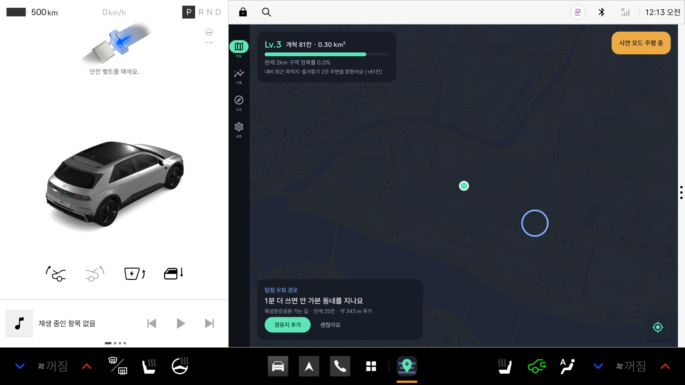
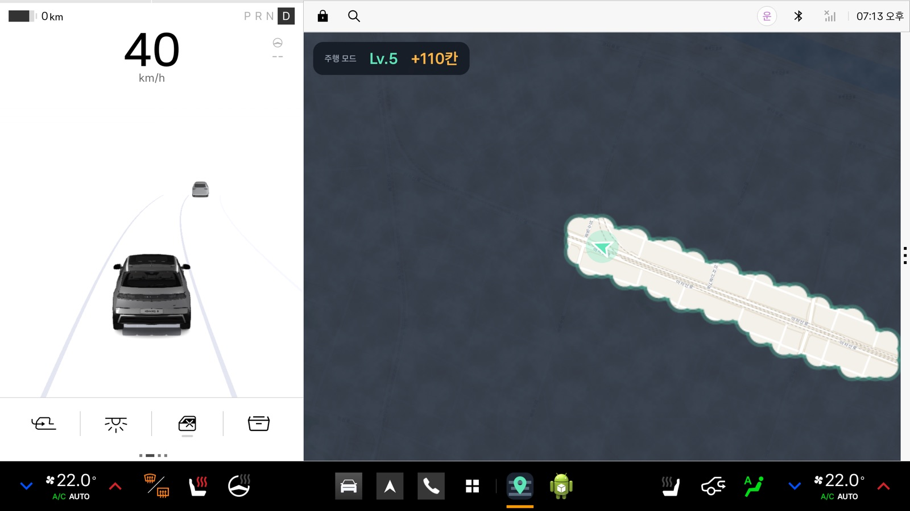
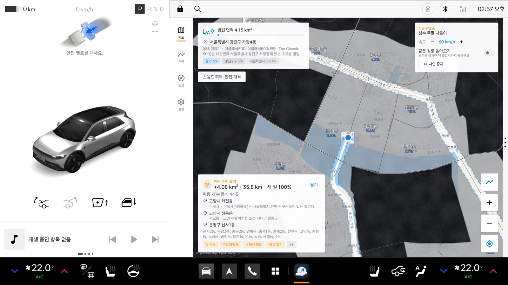
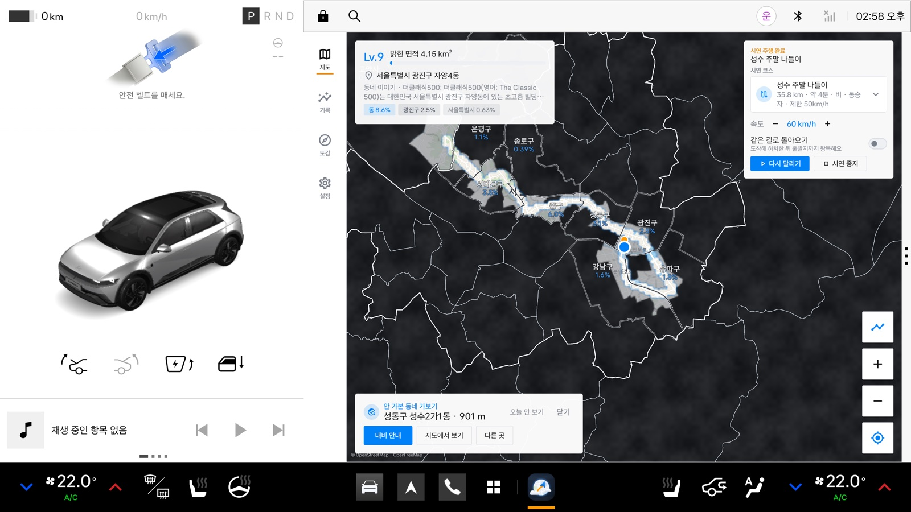
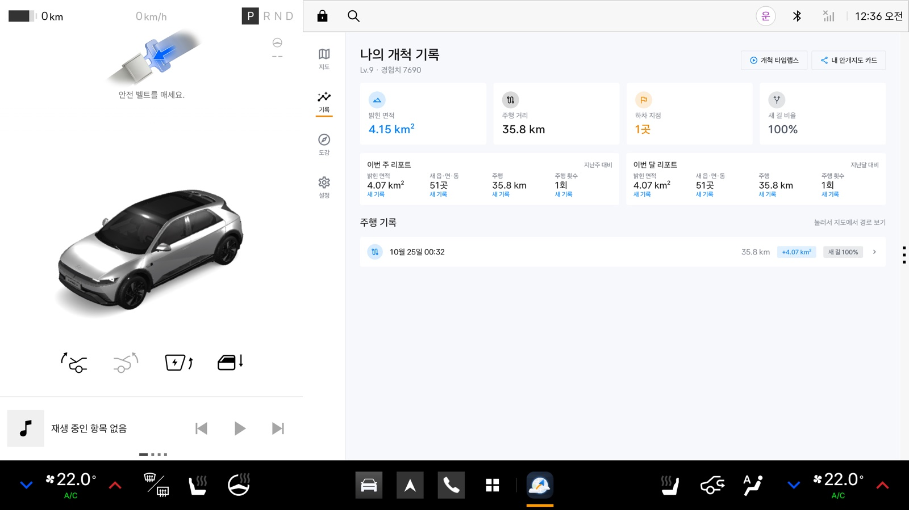
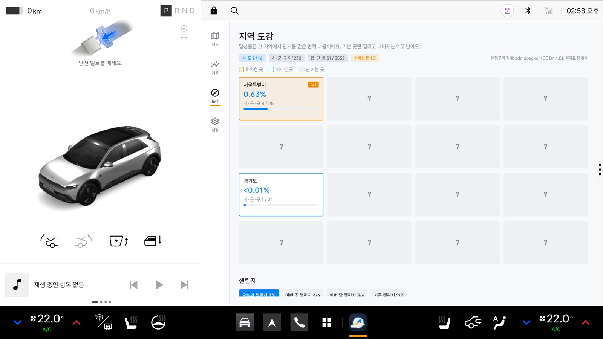
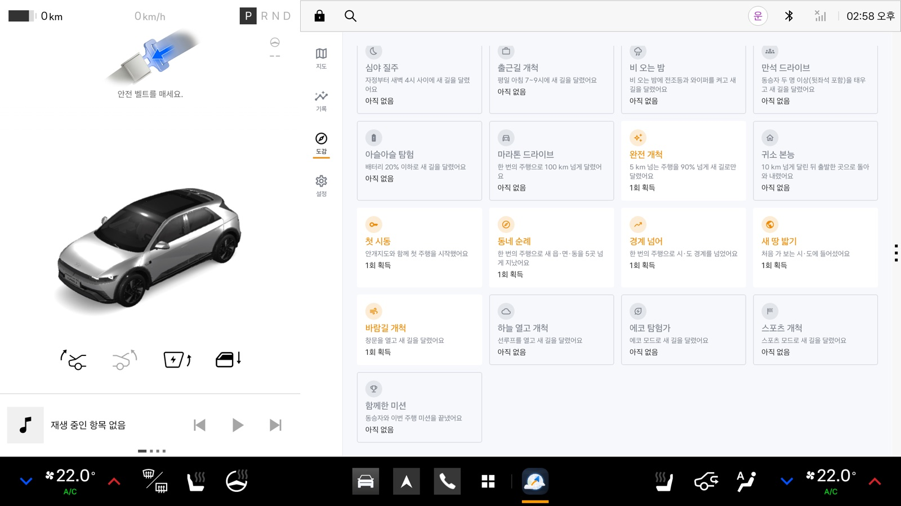
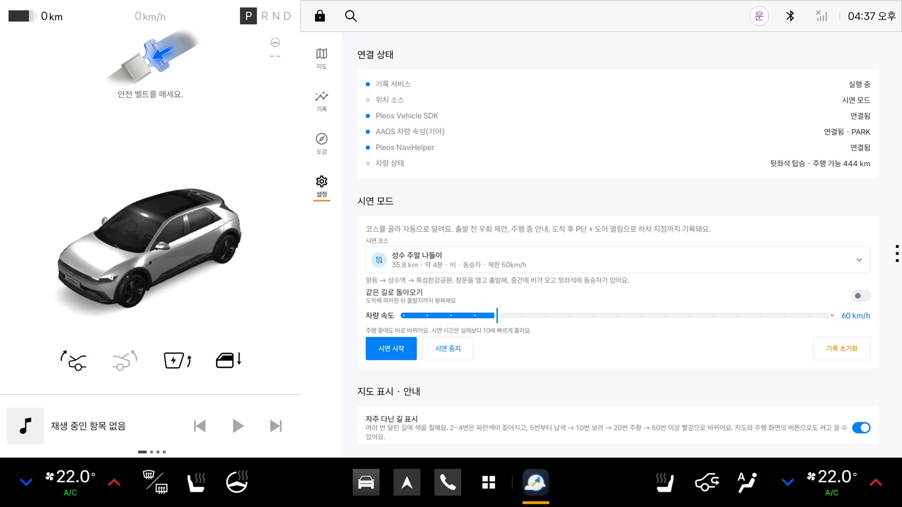
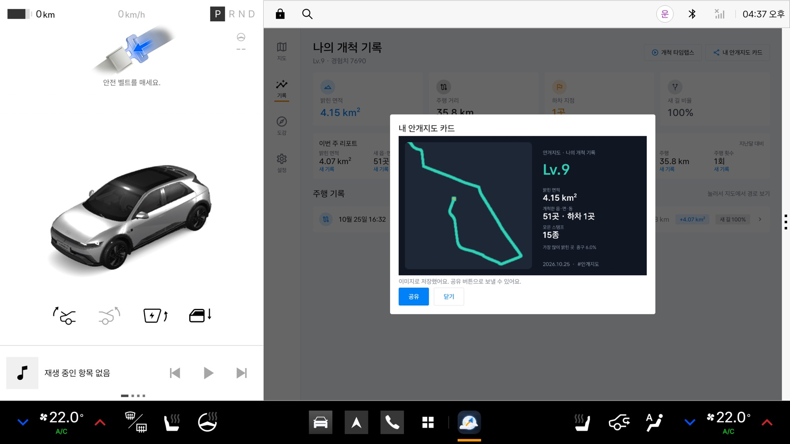
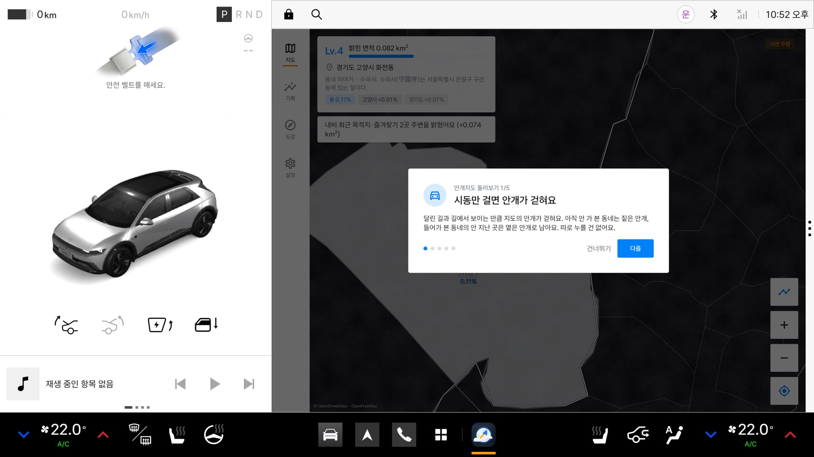

팀 zobo · 일반(스타트업 포함) 부문 · 작성 2026-10-24 (링크 검증일 동일) · 갱신 2026-10-25
안개지도(FogDrive) 공모전 준비 가이드
현대자동차그룹 차량용 앱 개발 공모전에 제출하기 위해 알아야 할 일정, 제출물, 양식 작성법, 일자별 계획을 한 곳에 모았습니다. 모든 항목에 공식 근거 링크를 달았습니다.
마감과 핵심 일정
| 날짜 | 일정 | 비고 |
|---|---|---|
| 2026.10.21(수) | 공고·접수 시작 | 숏폼 챌린지 참여 시작 |
| 2026.10.28(수) | 온라인 설명회 | 라이브 1회, 다시보기 제공 예정 |
| 2026.11.15(일) | 접수 마감 | 접수양식 기준 23:59까지. 마감 후 제출은 인정 안 됨 |
| 2026.11.23(월) | 1차 서류심사 결과 발표 | 합격팀은 공지사항으로 안내 |
| 2026.12.03–04 | 2차 최종 PT 심사 | 현대자동차 강남대로사옥 1층 UX스튜디오 서울(강남구 강남대로 350) |
| 2026.12.18(금) | 최종 선정 결과 발표 | 10팀 선정 |
| 2026.12.19–2027.01 | 수상팀 전시 준비 | 추가 개발 기간 아님. 영상·APK 구동 테스트 |
| 2027.02 | 현대자동차그룹 행사 전시·시상식 | 최종 순위 발표, 현장 시연·참석 의무 |
근거: 일정·설명회 · 온라인 설명회 안내 · 참가 및 출품 유의사항(2차 20팀, 시연 필수) · 접수양식 DOCX(23:59 표기)
제출물과 제출 방법
| 제출물 | 구분 | 내용 | 우리 계획 |
|---|---|---|---|
| 접수양식(기획서) DOCX | 필수 | 01 참가신청서 · 02 앱 소개/심사 자료 · 03 개인정보 동의 · 04 서명 | 02 작성 완료(application-form.docx), 01·03·04는 직접 기입·서명 |
| 시연 영상 | 선택 · 가산점 | 목업·프로토타입·화면 녹화 모두 인정 | 에뮬레이터 시연 모드 녹화 2–3분 (콘티) |
| GitHub 저장소 | 선택 · 가산점 | 소스 코드 + apk/ 폴더의 release APK + README | fogdrive 비공개 저장소 (준비 완료, 요건 점검) |
| 숏폼 링크 | 선택 · 가산점 없음 | 30초–1분 세로 영상, 접수양식 8번에 링크 기재 | 여유 있으면 진행 (별도 특별상 50만 원, 콘티) |
제출할 파일과 문서는 모두 저장소 docs/submission/에 모았습니다. 복사해서 바로 보낼 수 있는 이메일은 email.md에 있습니다.
이메일 제출
받는 사람 appdevchallenge@hyundai-partners.com
메일 제목 [차량용 앱 개발 공모전] zobo_대표자명
수정 제출 제목 [수정제출] [차량용 앱 개발 공모전] zobo_대표자명 — 처음 보낸 주소에서, 전체 자료와 서명한 동의서를 모두 다시 첨부
팀 참가라면 팀원 전원을 참조(CC)에 넣고, 팀원 각자 동의·서명·날짜를 작성해야 합니다. 참조만으로는 동의를 대신하지 않습니다.
마감 전 마지막으로 보낸 자료가 최종본으로 심사됩니다.
접수양식 작성 가이드
양식 원본은 저장소의 docs/submission/original/contest-application-consent.docx, 02를 채운 파일은 docs/submission/application-form.docx에 있습니다(02 원고: 02-app-introduction.md, 원본 다운로드). 양식이 곧 기획서이며, 소개 자료 분량 제한은 없습니다.
| 양식 영역 | 채울 내용 | 누가 |
|---|---|---|
| 01-A 참가 기본정보 | 참가 단위(개인/팀) · 부문 일반(스타트업 포함) · 팀명 zobo · 앱명 안개지도(FogDrive) · 대표자 성명/역할/소속(선택)/이메일/휴대폰 · 참가 인원 · 작성일 | 직접 |
| 01-B 참가 구성원 | 전원의 성명·소속·휴대폰·이메일·역할 | 직접 |
| 02 앱 소개 1–6 | 한 줄 소개 · 기획 배경 · 주요 기능/차량 특화 · 사용 시나리오 · 개발 계획(SDK/API) · 기대효과(타깃, MAU, 리텐션, 확대 계획) — 기획서 초안을 옮겨 적고 아래 변경점 반영 | Claude 초안 → 검토 |
| 02-7 참고자료 | 앱 화면 시안, 시연 영상 링크, GitHub 저장소 링크 | Claude 준비 → 검토 |
| 02-8 숏폼 링크 | 게시한 세로 영상 링크(선택) | 선택 |
| 03 개인정보 동의 · 04 서명 | 동의 체크, 본인 서명, 서명일자 (팀원 각자) | 직접 |
zobo와 GitHub noreply 이메일로 맞춰 두었습니다. 저장소는 팀 조직 TEAM-zobo로 옮겨 주소에 개인 계정 ID가 보이지 않습니다.기획서 초안 대비 반영할 변경점
- FusedLocation SDK: 초안은 "준비 중(로드맵)"으로 적었지만 공개 Maven에 1.1.3이 있고 에뮬레이터에서
isSupported()가 참입니다. 앱은 이미 FusedLocation을 우선 사용하고, 미지원 차량에서는 Android GPS로 대체합니다. 다만 Playground 프로젝트 화면에는 아직 "준비 중"으로 표시되므로 표현은 "지원 차량에서 사용, 미지원 시 대체"로 씁니다. - 기어(P단): Vehicle SDK에는 기어 도메인이 없어 AAOS 표준
CarPropertyManager(GEAR_SELECTION)를 씁니다. 초안과 동일합니다. - 격자 크기: 50m → 약 30m(웹 메르카토르 20레벨 타일). 주행 중에는 도로 양쪽 약 45m만 걷혀 넓은 지역이 한 번에 해금되지 않습니다. 구역 정복률은 현재 약 2km 정사각 구역 기준이며, 시군구·읍면동 경계 적용은 계획표에 있습니다.
- MAU·리텐션 수치는 공개 자료(판매량, Pleos 탑재 목표, 리텐션 벤치마크)를 바탕으로 한 가정입니다. 산식과 출처는 사업성 근거에 있고, 설명회에서 탑재 차량 수 공개 자료를 문의해 보완합니다.
근거: 접수양식 DOCX · FusedLocation SDK 소개 · SDK 사용 신청(상태 표시) · Vehicle SDK 도메인 목록
GitHub 저장소 제출 요건
- 소스 코드 업로드 (비공개 저장소
TEAM-zobo/fogdrive, 팀 조직으로 이전) - release APK를
apk/폴더에 업로드 · 파일명zobo_FogDrive_release.apk(규칙: 팀명_앱이름_release.apk) - README에 앱 이름·한 줄 소개, 실행 방법, 테스트 환경·필요 설정, APK 위치 기재
- 비공개 저장소이므로 공지될 심사용 GitHub 계정을 Collaborator로 초대 (계정 미공지 상태 — 공지사항 확인)
- 초대 후 마감 전 심사용 계정에서 정상 접근되는지 확인
- 심사용 계정은 읽기(Read) 권한으로 초대 (무료 조직 비공개 저장소는 브랜치 보호 불가)
- APK가 GitHub 용량을 넘으면 Releases에 올리고 Release 페이지 주소 제출 (R8·리소스 축소 적용 후 약 36MB로 100MB 제한 이내)
근거: GitHub 저장소 제출 안내 · FAQ(비공개 저장소)
심사 기준과 우리의 대응
| 평가 항목 | 보는 것 | 안개지도의 답 |
|---|---|---|
| 차량특화성 | 모바일 대비 차량만의 가치, 주행·정차 맥락과 결합 | 시동과 함께 끊김 없는 기록, P단+도어로 "머문 곳" 구분, 주행 중엔 간결한 주행 모드(지도·위치·숫자만), 게임 요소는 정차 중에만 |
| 창의성 | 독창성, 운전자·동승자 Pain Point 정의 | 이동 기록을 정복 게임으로(읍·면·동 단위 지역 도감), 와이퍼·전조등·좌석·충전 상황 스탬프 |
| 기술 활용성 | Pleos SDK·API를 핵심 기능에 적절히 활용 | Vehicle(도어·좌석·와이퍼·전조등·주행거리·EV) · NaviHelper(최근 목적지·즐겨찾기·목적지·경유지) · FusedLocation |
| 사업성 | 타깃, 예상 MAU, Retention, 확대 계획 | 가족·드라이브 애호가·출퇴근 3개 세그먼트, 오늘·주·월·시즌 챌린지, 스탬프 29종, 주행 요약·음성 안내·동승자 미션으로 재방문 유도, 지자체·관광 제휴 — 근거와 MAU 산식은 사업성 근거 |
| [가산점] 개발 산출물 | 시연 영상, GitHub(소스+APK) | 둘 다 제출 예정 |
근거: 심사·시상 (세부 배점 비공개)
사업성 근거 (2026-10-25 조사)
접수양식 02-6 기대효과(타깃, MAU, 리텐션, 확대 계획)에 옮겨 쓸 근거입니다. MAU 표의 값은 공개 자료를 바탕으로 한 가정이며, 출처가 있는 사실과 구분해 적습니다.
| 근거 | 값 | 출처 |
|---|---|---|
| Pleos Connect 탑재 계획 | 첫 적용 '더 뉴 그랜저'(2026년 5월), 이후 부분변경·신차로 확대, 2030년까지 전 세계 약 2,000만 대 목표 (기존 ccNC 차량은 미적용) | MTN 2026-04-30 · 헤럴드경제 2026-04-29 |
| 탑재 차종 판매(2026) | 더 뉴 그랜저 6월 10,062 · 8월 5,931 · 9월 8,898대, 디 올 뉴 아반떼(8/5 계약 시작, 전 트림 기본 탑재) 9월 7,305대 → 공식 집계만 약 3.2만 대, 월 약 1.6만 대 증가. 이 속도면 2027년 말 약 30만 대(MAU 보수 시나리오의 V) | 6월 · 8월 · 9월 실적 · 아반떼 계약 |
| 국내 신차 판매(2025) | 현대차 71.3만 대(제네시스 포함) + 기아 54.6만 대 ≈ 125.9만 대 | 현대차 2025 실적 · 판매 순위 기사 |
| 커넥티드카 가입자 | 글로벌 1,000만 명 돌파(2023년 6월, 현대차·기아·제네시스) | 스마트투데이 |
| 국내여행과 자동차 | 2025년 국내여행 경험률 97.0%, 총 3억 900만 회, 이동수단 자동차 84.5% | 2025 국민여행조사 보도 |
| 하루 주행거리 | 자동차 1대당 일평균 37.8km, 비사업용 30.8km (2025) | 한국교통안전공단 통계 보도 |
| 앱 리텐션 벤치마크 | 전체 앱 D1 26% / D7 13% / D30 7%, 여행 앱 D30 3–4% | Adjust · Phiture |
| 게이미피케이션 효과 | Duolingo 7일 스트릭 도달 사용자 완주 가능성 3.6배 / Pokémon GO 이용자 하루 1,473보 증가(동료 심사 논문) | Duolingo · JMIR 2016 |
| 지자체 스탬프 투어 선례 | 인천e지 다운로드 28.6만·회원 9.2만, 2024년 스탬프투어 협업 36건 / 한국관광 100선 스탬프 이벤트 | 헤럴드경제(인천e지) · 한국관광 100선 |
MAU 추정 (가정)
MAU = 국내 Pleos 탑재 누적 차량(V) × 앱 설치율(I) × 월간 활성률(A). V는 연 126만 대 판매 중 Pleos 탑재 비중이 늘어나는 것으로 보고 2027년 말 누적치를 가정했습니다. A는 일반 앱 D30(3–7%)보다 높게 잡았는데, 차량 앱은 시동 때마다 기록이 자동으로 돌고(설치 후 별도 실행 불필요) 비사업용 차량이 하루 평균 30.8km를 달리기 때문입니다.
| 시나리오 | V (2027년 말) | I | A | MAU |
|---|---|---|---|---|
| 보수 | 30만 대 | 2% | 30% | 약 1,800 |
| 기본 | 50만 대 | 5% | 40% | 약 1만 |
| 낙관 | 80만 대 | 10% | 50% | 약 4만 |
장기 상한은 2030년 글로벌 2,000만 대 목표에 해외 지도 데이터를 붙여 따로 산정합니다.
리텐션 장치와 추적 지표
| 지표 | 앱의 장치 | 비교 기준 |
|---|---|---|
| 주간 주행 리텐션(W1/W4/W12): 기록이 1건 이상인 주의 비율 | 자동 기록(시동만 걸면 됨), 오늘·이번 주·이번 달·시즌 챌린지 | Adjust D7 13% / D30 7% |
| 월 신규 개척 읍·면·동 수, 도감 진행률 | 지역 도감, 안 가본 동네 추천, 탐험 우회 경로, 동네 이야기 | 정체되면 추천·이야기 카드 노출 강화 |
| 챌린지 완료율, 연속 달성 주차 | 기간별 챌린지, 스탬프 29종, 레벨 곡선 | Duolingo 7일 스트릭 효과 |
| 주행 요약 조회율, 음성 안내 유지율 | 하차 후 주행 요약 카드, 음성 안내(새 동네·스탬프·요약) | 주행 1회당 가치 체감 |
| 동승자 미션 참여율, 공유 카드 생성 수 | 동승자 미션, 내 안개지도 카드 | 가족 세그먼트·바이럴, 지자체 스탬프 투어 제휴 성과 |
신뢰도 메모: 국내 커넥티드 가입자 수는 2020년(200만 명) 이후 공식 수치가 없어 인용하지 않습니다. 기아 2025 판매 수치는 순위 기사 기준이며 기아 보도자료 원문은 확인하지 못했습니다.
일자별 계획표
목표는 11/12(목) 제출, 11/13–15는 수정 제출용 여유입니다. 1차 이후 일정은 합격 시 진행합니다.
| 날짜 | 할 일 | 산출물 | 상태 |
|---|---|---|---|
| 10/24(토) | 공모전·개발 문서 분석, 프로젝트 생성, Pleos 에뮬레이터 구축, MVP 구현(자동 기록·안개·하차 지점·스탬프·내비 연동·우회 제안·시연 모드) | 저장소, 디버그/릴리스 APK, 이 문서 | 완료 |
| 10/24–25 | 행정구역 경계 적용(지역 도감·두 단계 안개), 내비 연동 확장(도착·경유지 스탬프, 회전 안내, 동네 추천), 주행 경로 보기, 반복 주행, 기간별 챌린지·스탬프 24종·레벨 곡선, 백업·동기화, 시연 코스 17개, 주행 지도 흔들림 수정, 튜토리얼·음성 안내·주행 요약·동승자 미션·창문/선루프/주행 모드/주행 가능 거리 연동·동네 이야기·공유 카드, 사업성 근거 초안, 단위 테스트 58개·QA TC 21개 (계획보다 앞당겨 완료) | "○○구 정복률" 화면, 지역 도감, 시연 코스 | 완료 |
| 10/26(월) | Virtual Console로 기어·도어·와이퍼·전조등·좌석 실신호 검증, 에뮬레이터 위치 이동 테스트 | 검증 기록 | 예정 |
| 10/27(화) | 주행 중 화면 차단 동작·큰 터치 영역 점검 | 점검 기록 | 예정 |
| 10/28(수) | 온라인 설명회(오후) — 참석·질문하지 않기로 함. 궁금한 점은 공지·FAQ·SDK 문서로 10/25에 확인(확인한 것) | — | 대체 완료 |
| 10/29(목) | 기획서 수정(FusedLocation, 격자, 지역 정복률, TTS SDK 상태) — 10/25 접수양식 02에 반영 | 기획서 v2 | 앞당겨 완료 |
| 10/30(금) | 우회 경로 고도화, TTS "새 동네 진입" 음성 검토, 첫 실행 온보딩 — 10/25에 음성 안내·튜토리얼·주행 가능 거리 반영 완료, 실차 음성 톤 점검만 남음 | 앱 v0.2 | 앞당겨 완료 |
| 10/31–11/1 | 시연 영상 촬영·편집(2–3분) — 10/25에 콘티·촬영 방법(demo-video.md)과 화면 이미지 10장 준비 | 시연 영상 | 예정 |
| 11/2(월) | 사업성 근거 보완(MAU 산식·리텐션 비교 지표) — 10/25 탑재 차종 판매 실적으로 보완 | 기대효과 절 v2 | 완료 |
| 11/3–11/5 | 접수양식 02(1–8) 작성, 숏폼 영상(선택) — 10/25에 02 초안을 양식에 채움(application-form.docx), 설명회 답변으로 보완 | 양식 초안 | 초안 |
| 11/6–11/9 | 안정화, 릴리스 APK 갱신, README 최종, 심사용 계정 초대(공지 시) | 앱 v1.0 | 예정 |
| 11/10(화) | 최종 점검(체크리스트·링크·실명 노출 여부) | 점검 결과 | 예정 |
| 11/11(수) | 01·03·04 기입과 서명 | 서명본 | 직접 |
| 11/12(목) | 이메일 제출 (목표일) | 제출 메일 | 직접 |
| 11/13–11/15 | 여유 기간, 필요 시 [수정제출] | — | 예비 |
| 11/23(월) | 1차 결과 확인 | — | 예정 |
| 11/24–12/2 | (합격 시) 실동작 앱 고도화, 발표 자료, 시연 리허설 | PT 자료 | 예정 |
| 12/3–12/4 | 2차 PT 발표·시연 | — | 직접 |
개발 현황 (2026-10-25)
Pleos Connect Emulator v2.1.0에서 Vehicle SDK, AAOS 기어, NaviHelper, FusedLocation이 모두 연결되는 것을 확인했습니다. 단위 테스트 58개 통과. 화면은 2026-10-25 시연 모드(성수 주말 나들이)로 다시 찍었습니다.










| 기능 | 사용 API | 상태 |
|---|---|---|
| 자동 안개 걷기(약 30m 격자, 도로 양쪽 약 45m) | FusedLocation → 미지원 시 Android GPS | 구현 |
| 하차 지점(P단 + 도어 열림) | AAOS GEAR_SELECTION, Vehicle Door | 구현 |
| 첫 실행 지도 채우기 | NaviHelper 최근 목적지·즐겨찾기 | 구현 |
| 탐험 우회 경로 → 경유지 추가 | NaviHelper getDestinationInfo · addWaypoint | 구현 |
| 스탬프 24종(빗속·야간·가족·만석·충전·저배터리, 시간대, 장거리·개척왕, 새 시·군·구·시·도 등) — 아래 5종 추가로 29종 | Vehicle Wiper · Light · Seat · EvBattery, 행정구역 | 구현 |
| 목적지·경유지 도착 해금 + 목적지 정복·안개 원정 스탬프, 회전 안내·제한속도 | NaviHelper 경로 안내 상태 | 구현 |
| 안 가본 동네 추천 → 내비 안내 | NaviHelper requestRoute | 구현 |
| 개척 지표(밝힌 면적 km²·새 길 비율), 레벨((L-1)^2.5×40 XP), 오늘·주·월·시즌 챌린지 | 앱 내부 계산 (Odometer 연결됨) | 구현 |
| 주행 경로 보기, 같은 길 반복 횟수(자주 다닌 길 6단계 색) | Room DB v4 (마이그레이션으로 기존 기록 유지) | 구현 |
| 주행 모드 | distraction-optimized 액티비티 + CarUxRestrictions: 주행 중 지도·현재 위치·짧은 숫자만, 탭·우회 제안·기록·도감은 정차 중에만. 차는 화면 중앙 고정, 미리 그린 지도를 밀어서 이동(보간). 주행 중 CPU 3.6%(40km/h)·6.2%(100km/h)·정지 0.2%, PSS 약 160MB (Pleos 기준: 지도 앱 15%, RAM 400MB) | 구현 |
| 행정구역 정복률·지역 도감(시·도→시·군·구→읍·면·동), 두 단계 안개, 하차 지역 표시 | admdongkor 행정구역 경계 (CC BY 4.0, 통계청) | 구현 |
| 백업 내보내기·불러오기, 클라우드 동기화 | Pleos Sync SDK 미공개 → 기기 내 보낼 함 대체 구현 | SDK 대기 |
| 시연 모드: 코스 17개(서울·수도권·부산·강릉), 20~200km/h, 왕복, 회전 안내·도착 대체 생성 | OSRM 실제 도로 경로 | 구현 |
| 음성 안내(새 동네·스탬프·도착·미션·주행 요약) | Android TextToSpeech, 내비 안내 오디오로 재생 (Pleos TextToSpeech SDK 3.3.1 공개 확인, 교체 예정) | 구현 |
| 첫 실행 튜토리얼(5장, 설정에서 다시 보기) | 앱 내부 | 구현 |
| 주행 요약 카드(면적·거리·새 길·처음 가 본 동네·스탬프·미션) | 앱 내부 계산 | 구현 |
| 동승자 미션(주행 화면엔 진행 한 줄, 성공 시 스탬프) | Vehicle Seat | 구현 |
| 스탬프 5종 추가: 창문·선루프·에코·스포츠·동승자 미션 (총 29종), 주행 가능 거리로 우회 경로 거르기 | Vehicle Window · DrivingMode · Odometer RangeRemaining | 구현 |
| 동네 이야기(처음 가 본 동의 명소 한 줄) | 위키백과 API (동 중심 좌표만 전송, 기기에 저장) | 구현 |
| 내 안개지도 공유 카드(PNG) | FileProvider 공유 인텐트 | 구현 |
근거: Vehicle 권한 · NaviHelper 권한 · API 호환성 및 가용성 · FusedLocation 샘플
QA·테스트 환경
Pleos Connect Emulator에서 실제 SDK 경로로 기능을 자동 검증합니다. 차량 신호는 Virtual Console API, 위치는 adb emu geo fix로 주입하고, 화면은 UIAutomator로 판독합니다.
./gradlew :app:testDebugUnitTest사용법: 저장소 qa/README.md · 근거: Virtual Console 셋업
확인·결정이 필요한 것
설명회 대신 직접 확인한 것 (2026-10-25)
- SDK 사용: 공모전 FAQ의 제공 SDK는 Vehicle·NaviHelper·TextToSpeech·SpeechToText·FusedLocation입니다. Pleos Maven에 TextToSpeech 3.3.1(10/13)이 올라와 있어, 지금 Android TextToSpeech로 만든 음성 안내를 Pleos TextToSpeech SDK로 바꿔야 합니다. FusedLocation 1.1.3은 이미 사용 중입니다. (FAQ · TextToSpeech SDK 문서)
- 위치 시뮬레이션: 공식 권장 방법은 따로 없습니다. Virtual Console과
adb emu geo fix로 QA 자동 테스트를 돌리고 있고, 시연은 앱의 시연 모드로 합니다. - 외부 지도 타일: FAQ·유의사항에 네트워크 사용 제한이 없습니다. OpenStreetMap 출처 표기만 유지합니다.
- MAU 근거: 탑재 차량 누적 대수는 공개되지 않았습니다. 대신 탑재 차종 판매로 추정합니다. 2026년 9월 국내 판매 그랜저 8,898대·아반떼 7,305대(현대차 9월 실적), 아반떼는 8/5 계약 시작부터 전 트림 기본 탑재(기사).
- 좌석 탑승 값 반대 현상: 에뮬레이터 2.1.0 Virtual Console 문제로 보고, QA 도구가 보정합니다(
VConsole.seat()). 앱 동작과는 관계없습니다.
꼭 알아둘 유의사항
- 출품작은 순수 창작물이어야 하며, 표절·기 수상작은 심사에서 제외됩니다. 서류 내용이 사실과 다르면 선정이 취소될 수 있습니다.
- 마감 이후 제출과 파일 오류·파손은 지원자 책임입니다.
- 현대자동차그룹 임직원은 참가는 가능하지만 최종 수상(시상·상금)에서는 제외됩니다.
- 지식재산권은 응모자에게 있으나, 수상작은 주최측이 통상실시권과 결과 발표일로부터 4개월 우선협상권을 가질 수 있습니다.
- 상금은 대표자에게 일괄 지급되며 제세공과금은 원천징수됩니다.
- 2차 진출팀은 실제 동작하는 앱(에뮬레이터 또는 기기)을 시연해야 하고, 최종 10팀은 전시용 APK 제출과 2027년 2월 행사 참석 의무가 있습니다.
- 지도 데이터는 OpenStreetMap 기반(OpenFreeMap 타일)이라 앱에 출처 표기를 유지해야 합니다.
근거 링크 (2026-10-24 전부 열어 내용 확인)
| 문서 | 확인한 내용 |
|---|---|
| 공모전 메인 | 총상금 5,100만원, 접수 10.21–11.15 |
| 공모전 개요 | 참가 대상, 팀 최대 5인, 부문 |
| 일정·설명회 | 전체 일정, PT 장소 |
| 지원·제출 방법 | 이메일 주소, 제목 형식, 수정 제출 |
| GitHub 저장소 제출 안내 | apk/ 폴더, 파일명 규칙, README 항목, 비공개 저장소 |
| 개발 환경 | API 28+, Gradle 8+, Java/Kotlin |
| 심사·시상 | 심사 4항목 + 가산점, 상금 |
| 참가 규정 | 제출·수정·마감 규정 |
| 숏폼 챌린지 | 필수 해시태그 #HMG차량용앱개발공모전 |
| 도움말·문의 | 문의 이메일 |
| FAQ | 비공개 저장소, 팀 접수, 개발 환경 |
| 공지사항 | 공지 3건 |
| 참가자 모집 공고 | 제출물, 심사 항목, 일정 |
| 온라인 설명회 안내 | 10/28(수) 오후, 다시보기 |
| 참가 및 출품 유의사항 | 2차 20팀, 시연 필수, 지재권, 임직원 수상 제외 |
| 접수양식 DOCX | 양식 구조, 23:59 마감 표기 |
| Pleos Connect Emulator 설치 | 시스템 이미지 URL, AVD 설정 |
| Virtual Console 셋업 | adb forward 8088, 차량 상태 시뮬레이션 |
| 앱 개발 시작하기 | Maven 저장소, 첫 API 호출 |
| 프로젝트 생성 및 SDK 사용 신청 | Vehicle State·NaviHelper 신청 없이 사용 |
| Vehicle SDK 소개 | 도메인 목록(기어 도메인 없음) |
| Vehicle SDK 권한 | 도메인별 퍼미션 |
| NaviHelper 권한 | NAVI_ROUTE, NAVI_ROUTE_SEARCH |
| FusedLocation SDK 소개 | isSupported(), 권한 |
| API 호환성 및 가용성 | NaviHelper는 내비 탑재 차량만 전체 호환 |
| Vehicle 샘플 앱 · Navi 샘플 앱 · FusedLocation 샘플 앱 | SDK 버전, 연동 방식 |
| OpenFreeMap · OpenStreetMap 저작권 | 지도 타일, 출처 표기 |
| Fog of World (App Store) | 폰 기반 선행 서비스 |
| 안개지도 기획서 초안 | 접수양식 02 원고 (로그인 필요) |